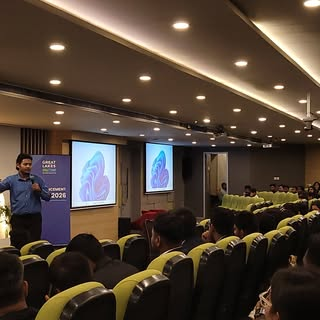

Dr. Swapnil Sahoo
Assistant Professor – Strategy & Entrepreneurship

About Me
With a Ph.D. from XLRI Jamshedpur and 17 years of corporate experience, my work exists at the intersection of academic theory and strategic practice.
My research investigates entrepreneurial resourcefulness, with a focus on Dynamic Capabilities, Frugal Innovation, and Neurodiversity. I explore how organizations innovate and thrive within constraints.
Teaching & Sessions
Course materials on strategic management and innovation.